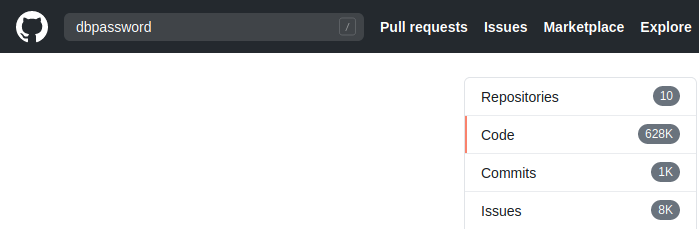
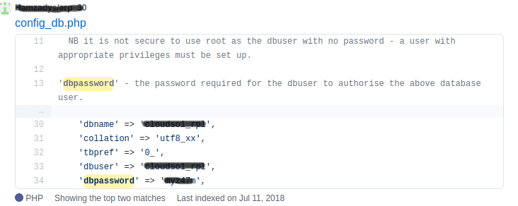
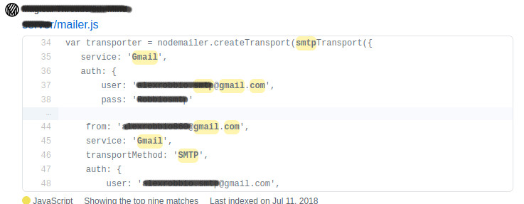
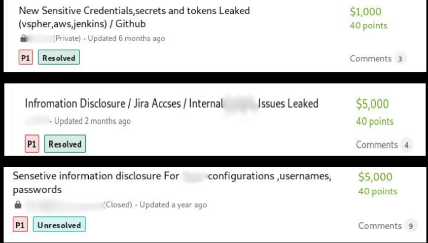

alperen
Ana Sayfa
|
Ben Kimim?
|
Yararlı Linkler
Bug Hunterlar İçin Github
Bir uygulamada hassas veriler yeterince korunmadığında güvenlik açıkları oluşabilir.
Github’da halka açık depolarda hassas dosyalar nedeniyle hassas verilere ulaşılabilir. Sadece parolalar gibi bilgilerle sınırlı olmayıp kredi kartı verileri, API keyleri içerebilmektedir.
Hedefimizin kimlik bilgileri ve API keyleri aramak için kullanacağımız payloadlardan bazıları
“hedef.com” dbpassword #Hedefimizin veritabanı verilerine ulaşılabilr.

"hedef.com" MAIL_HOST=smtp.gmail.com

Depolarda hassas verilere ulaşabilmek için arayabileceğimiz payloadlar:
Örnek: "hedef.com" security_credentials
- API_key
- secret_key
- aws_key
- redis_password
- access_key
- token
- security_credentials
- FTP
- config
- github_token
- Connectionstring
Depolarda hassas verilere ulaşabilmek için arayabileceğimiz dosyalar:
Örnek: "hedef.com" filename:wp-config.php
- Django config dosyası
- Environment config dosyası
- PHP config dosyası
- Shell config dosyası (.bashrc, .zshrc, .cshrc)
- SSH config dosyası
Bulduğumuz zafiyetler Bugcrowd'da genellikle P1-P2 seviyesinde kabul gören açıklardır.
Kaynaklar
Bugcrowd University Sensitive Data Exposure
Security Trails Github Dorks
Github Data Exposed